Task 2: Build the Underlay
Task 2: IS-IS PE-CE Routing¶
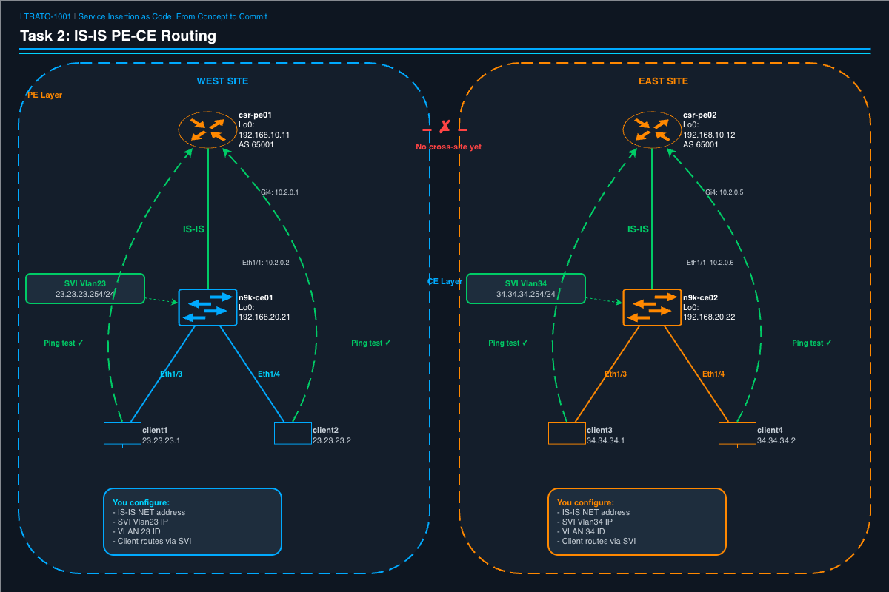
Objective¶
Configure IS-IS routing between the N9K CE switches and CSR PE routers, and create gateway SVIs (Switch Virtual Interfaces) so Linux clients can reach beyond their local switch.
Before Task 2: - Clients can only reach other clients on the same switch - No routing exists between CE and PE
After Task 2: - Client1/2 can ping csr-pe01 Loopback0 (192.168.10.11) - Client3/4 can ping csr-pe02 Loopback0 (192.168.10.12)
Why IS-IS?¶
Right now, the N9K switches and CSR PE routers have IP addresses on their shared links, but no routing protocol is exchanging routes between them. IS-IS (Intermediate System to Intermediate System) is the IGP commonly used in service provider networks. It will:
- Form adjacencies between directly-connected routers
- Advertise connected subnets (including client VLANs) into the routing table
- Give each router a path to reach the other's networks
We also need to create SVIs (Switched Virtual Interfaces) — these are Layer 3 gateways on the VLAN interfaces. Without an SVI, clients have L2 connectivity but no default gateway to reach anything beyond their local switch.
Deriving IS-IS NET Addresses¶
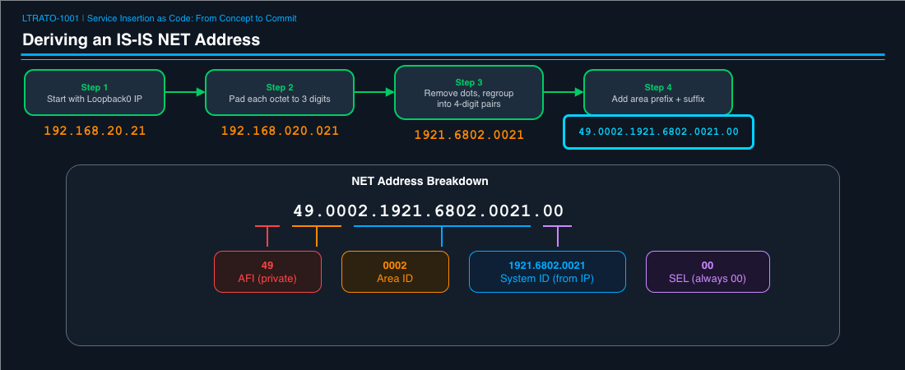
IS-IS uses a NET (Network Entity Title) to uniquely identify each router. The format is:
The system-id is derived from the router's Loopback0 IP address. Here's how to convert an IP address to a system-id:
Example: n9k-ce01 has Loopback0 IP 192.168.20.21
- Pad each octet to 3 digits:
192.168.020.021 - Regroup into 3 pairs of 4 digits:
1921.6802.0021 - Build the full NET:
49.0002.1921.6802.0021.00
Try it yourself: What is the NET for csr-pe01 (Loopback0: 192.168.10.11)?
- Pad:
192.168.010.011 - Regroup:
1921.6801.0011 - NET:
49.0002.1921.6801.0011.00
Check your answers against Table 4: IS-IS Configuration.
Exercise: Complete the Playbook¶
This playbook has three plays with variables to fill in. Open it:
Play 1 — NX-OS CE Switches¶
Scroll to the first vars: section. You'll see these TODO placeholders:
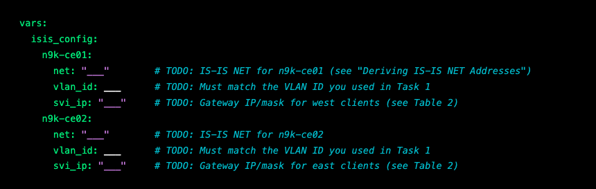
Using Table 4 and Table 2, fill in these values:
| Variable | Hint | Where to Find It |
|---|---|---|
net for n9k-ce01 |
IS-IS NET derived from 192.168.20.21 | Table 4 or derive it yourself |
net for n9k-ce02 |
IS-IS NET derived from 192.168.20.22 | Table 4 or derive it yourself |
vlan_id for n9k-ce01 |
Must match what you used in Task 1 | Your Task 1 values |
vlan_id for n9k-ce02 |
Must match what you used in Task 1 | Your Task 1 values |
svi_ip for n9k-ce01 |
Gateway IP/mask for 23.23.23.0/24 | Table 2, look for "SVI (Vlan23)" |
svi_ip for n9k-ce02 |
Gateway IP/mask for 34.34.34.0/24 | Table 2, look for "SVI (Vlan34)" |
Important: The
svi_ipvalues must include the subnet mask (e.g.,23.23.23.254/24). The/24tells the switch what subnet this gateway belongs to.Why must
vlan_idmatch Task 1? The SVI (Switch Virtual Interface) is created on a specific VLAN. If you use VLAN 23 for west clients in Task 1 but a different VLAN here, the SVI won't be in the same broadcast domain as the clients, and they won't be able to use it as their gateway.
Play 2 — CSR PE Routers¶
Scroll down to the second vars: section:
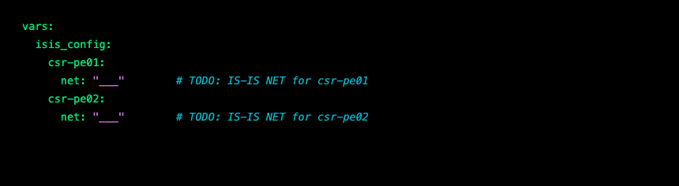
Using Table 4, fill in:
| Variable | Hint | Where to Find It |
|---|---|---|
net for csr-pe01 |
IS-IS NET derived from 192.168.10.11 | Table 4 or derive it yourself |
net for csr-pe02 |
IS-IS NET derived from 192.168.10.12 | Table 4 or derive it yourself |
Practice the derivation: Try converting
192.168.10.11to a NET without looking at Table 4. Pad each octet to 3 digits (192.168.010.011), regroup (1921.6801.0011), then build the NET (49.0002.1921.6801.0011.00). Check your answer against the table.
Play 3 — Linux Client Routes¶
Scroll down to the third vars: section:
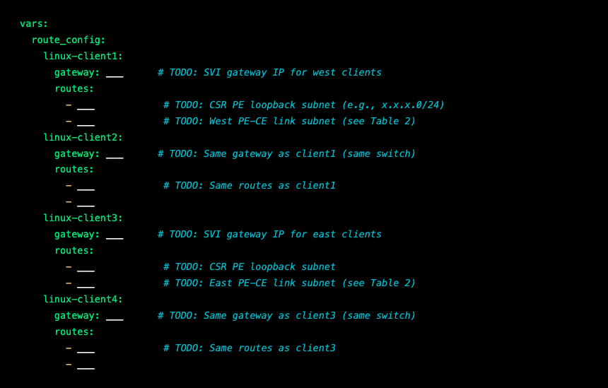
Using Table 2, fill in:
| Variable | Hint | Where to Find It |
|---|---|---|
gateway for client1/2 |
SVI IP without the mask | Table 2, "SVI (Vlan23)" row |
gateway for client3/4 |
SVI IP without the mask | Table 2, "SVI (Vlan34)" row |
| First route (all clients) | Where CSR PE loopbacks live | Both PEs are in 192.168.10.0/24 |
| Second route (client1/2) | West PE-CE link | Table 2, csr-pe01 Gi4 row |
| Second route (client3/4) | East PE-CE link | Table 2, csr-pe02 Gi4 row |
Why do clients need static routes? The Linux clients are simple hosts — they don't run any routing protocols. Without explicit routes, they only know about their own /24 subnet. We need to tell them: "To reach the CSR PE loopback or PE-CE link, send traffic to your SVI gateway." In a real network, you might use DHCP to push a default gateway instead, but static routes let you see exactly what's happening.
Why two routes per client? Each client needs to reach: (1) the CSR PE loopback (for the Task 2 ping test), and (2) the PE-CE link subnet (because traffic from the PE may source from the PE-CE interface IP, and the client needs a return path).
Save the file when done.
Ansible Concepts in This Playbook¶
-
Multi-platform orchestration — One playbook with three plays, each targeting a different device group (
nxos,csr,linux). Ansible runs them in sequence, handling the platform differences transparently. -
parents— Enters a config context before pushing commands.parents: router isis COREis like typingrouter isis COREon the CLI, then thelinesare the sub-commands. -
ansible.builtin.raw— Runs a raw shell command on Linux hosts. We use this because Alpine Linux containers don't have Python installed (which normal Ansible modules require). -
wait_for— Pauses until SSH is responsive. CSR1000v can be slow to process config, and we need to wait for it to settle before the next play. -
Platform differences — Notice that NX-OS puts
isis passive-interfaceunder the interface, while IOS putspassive-interfaceunder the router process. Same feature, different syntax. This is a real-world challenge when writing multi-vendor automation.
Run It¶
This playbook takes about 3 minutes. It configures three different platforms in sequence: NX-OS switches first, then CSR PE routers, then Linux clients.
Understanding the Output¶
Play 1 — NX-OS configuration creates IS-IS and SVIs:
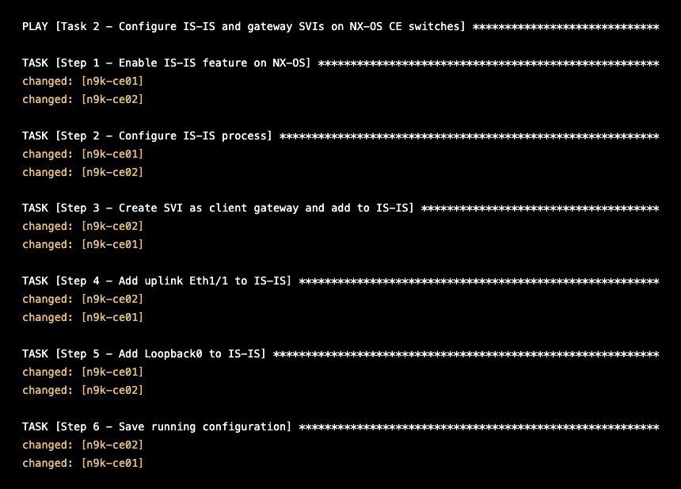
What just happened? Step 1 enables the IS-IS feature (
feature isison NX-OS). Steps 2-5 create the IS-IS process, add the SVI, uplink, and loopback to IS-IS. The SVI acts as the default gateway for your client VLAN. The uplink (Eth1/1) is the path to the CSR PE. The loopback is advertised so other routers can reach this switch's router ID.
Play 2 — CSR PE configuration creates IS-IS on the PE routers:
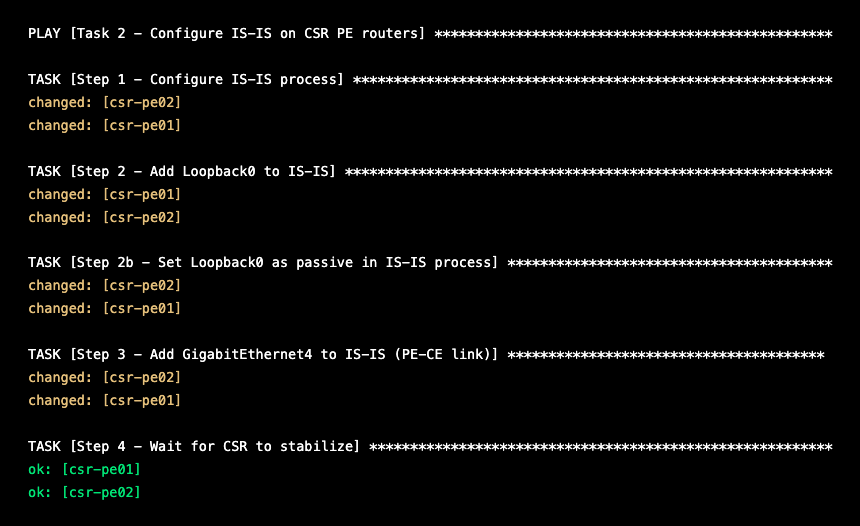
Why is Loopback0 passive? A passive interface advertises its IP into IS-IS (so other routers learn the route) but doesn't try to form an adjacency on it. Loopbacks are virtual — there's no neighbor on the other end. Notice the platform difference: on NX-OS, passive is configured under the interface (
isis passive-interface level-2), but on IOS-XE, it's configured under the router process (passive-interface Loopback0). Same feature, different CLI.
Play 3 — Linux routes adds static routes so clients can reach the PE:
Heads-up — Jinja2 warning: You may see a warning like
[WARNING]: conditional statements should not include jinja2 templatingand the task name may display asAdd route to << error 1 >> via SVI gateway. This is a cosmetic issue only — the task name references{{ item }}which Ansible can't resolve until the loop starts. The routes are applied correctly despite the warning.
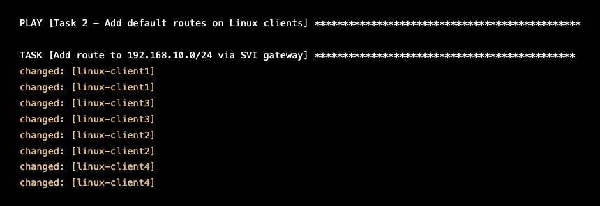
Notice the
loopin action: Each client runs the task twice — once per route in itsrouteslist. The=> (item=...)shows which route is being added on each iteration. This is how Ansible avoids writing four nearly-identical tasks for four different clients.
Verification plays show IS-IS adjacencies and routes:
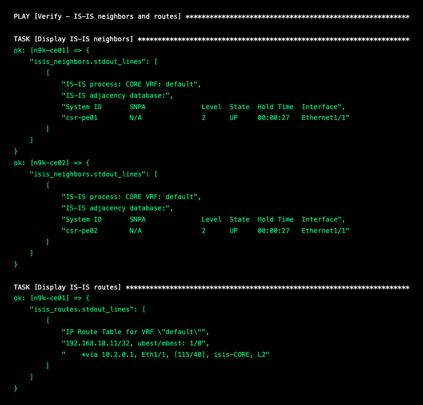
What to look for: The
Statecolumn should sayUP— this means the IS-IS adjacency has formed between the CE switch and its PE router. TheInterfaceshould beEthernet1/1(the uplink). If you seeINITinstead ofUP, the neighbor's IS-IS process might not be configured yet, or the NET addresses might be malformed.Reading the route table:
192.168.10.11/32is csr-pe01's Loopback0 — learned via IS-IS (isis-CORE, L2) through the uplink (Eth1/1). The[115/40]means IS-IS preference 115, metric 40. If this route doesn't appear, check that the CSR PE's Loopback0 was added to IS-IS and that the adjacency isUP.
The CSR PE verification shows the same from the other side:
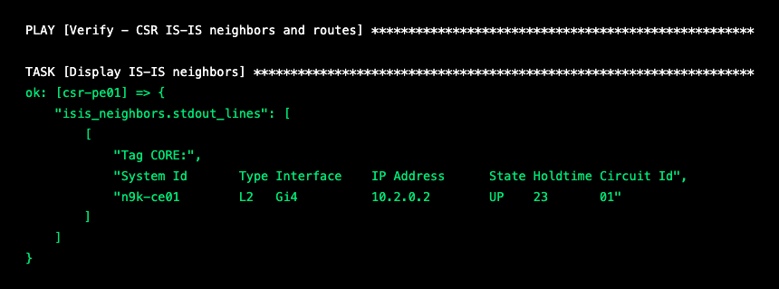
Cross-check: csr-pe01 sees n9k-ce01 as a Level 2 neighbor on Gi4 (the PE-CE link). The IP
10.2.0.2is n9k-ce01's Eth1/1 address. Both sides must showUPfor routes to flow.
Ping tests confirm end-to-end reachability from clients to PE loopbacks:
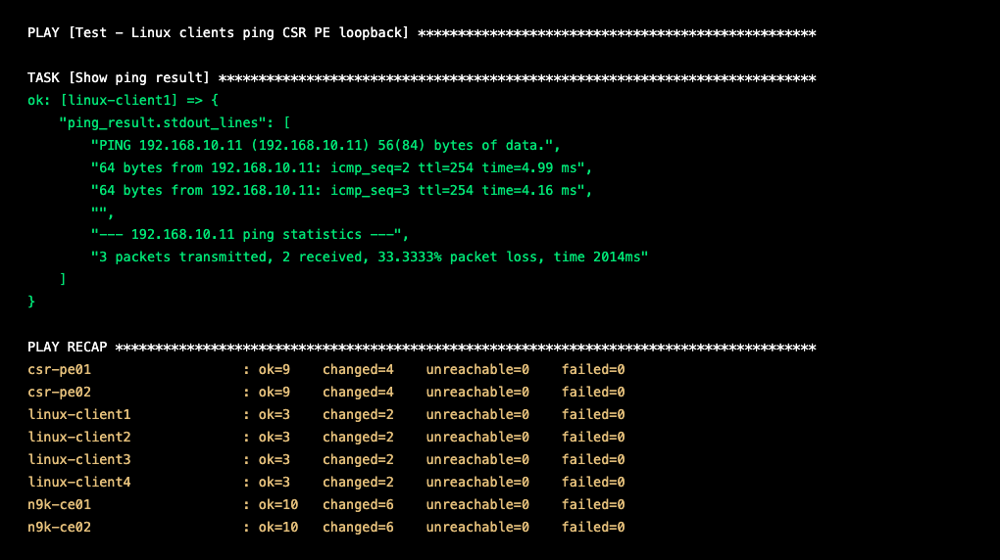
Why 2 out of 3? The first ping packet is often lost because the ARP table is empty. When client1 sends the first ICMP packet, the network needs to resolve MAC addresses at each hop. By the time the second packet arrives, ARP entries are cached and traffic flows. 2 out of 3 received is a pass. If you see 0 received, something is wrong.
TTL=254 tells you the packet crossed 2 hops: client1 → n9k-ce01 SVI → csr-pe01 Loopback0. Each hop decrements the TTL by 1 (Cisco IOS routers originate replies with TTL 255).
Reading the recap: Each line is a device.
changed=4means 4 tasks made changes.failed=0means nothing went wrong. If you seefailed=1or higher, scroll up to find the red error message — it will tell you exactly which task failed and why.
Checkpoint¶
Confirm these results from the playbook output:
- [ ] IS-IS neighbors show
UPon both N9K switches and both CSR PEs - [ ] IS-IS routes appear in the routing table (CSR PE loopback and client subnets)
- [ ] All 4 clients can ping their local CSR PE loopback: 2/3 or 3/3 packets received
- [ ] PLAY RECAP shows failed=0 for all devices
Note: The first ping packet may be lost due to ARP resolution — this is normal. 2 out of 3 packets received is a pass.
Troubleshooting: If IS-IS neighbors don't come up, check that your NET addresses are correctly formatted (the system-id must be unique per device, and all must be in area
49.0002). If pings fail but IS-IS is up, verify the SVI IPs match your client subnets and that the Linux client routes point to the correct gateway.💡 Automation Insight: This playbook touched 8 devices across 3 different platforms (NX-OS, IOS-XE, Linux) in a single run. In a manual workflow, you'd need to context-switch between 3 different CLI syntaxes and remember which command goes where. Ansible handled that for you — same YAML, different collections under the hood.